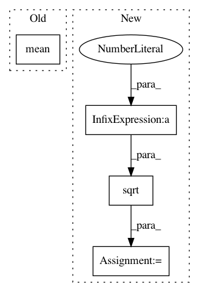

68963166e5fe4e23655279b653f7cc6ed6d0d0b3,dipy/reconst/mapmri.py,MapmriModel,fit,#MapmriModel#Any#,32
Before Change
"CVXOPT package needed to enforce constraints")
import cvxopt.solvers
// rmax is linear in mu with rmax \aprox 0.3 for mu = 1/(2*pi*sqrt(700))
rmax = 0.35 * mu.mean()* (2 * np.pi * np.sqrt(700))
rgrad = gen_rgrid(rmax = rmax, Nstep = 10)
K = mapmri_psi_matrix(self.radial_order, mu, rgrad, self.tau)
After Change
raise ValueError(
"CVXOPT package needed to enforce constraints")
import cvxopt.solvers
rmax = 2* np.sqrt(10 * evals.max()*self.tau)
r_index, r_grad = create_rspace(11, rmax)
K = mapmri_psi_matrix(self.radial_order, mu, r_grad[0:len(r_grad)/2,:], self.tau)
Q = cvxopt.matrix(np.dot(M.T,M)+ self.lambd * I)
p = cvxopt.matrix(-1*np.dot(M.T,data))
In pattern: SUPERPATTERN
Frequency: 3
Non-data size: 4
Instances
Project Name: nipy/dipy
Commit Name: 68963166e5fe4e23655279b653f7cc6ed6d0d0b3
Time: 2015-09-14
Author: mauro.zucchelli88@gmail.com
File Name: dipy/reconst/mapmri.py
Class Name: MapmriModel
Method Name: fit
Project Name: chainer/chainerrl
Commit Name: e549a712f226dcd265da71bb6c2009da2289ec1d
Time: 2017-11-13
Author: kataoka@preferred.jp
File Name: tests/links_tests/test_noisy_linear.py
Class Name: TestFactorizedNoisyLinear
Method Name: test_randomness
Project Name: pyprob/pyprob
Commit Name: 294c1eb610265c884175c2b8c125615c7d549cb3
Time: 2018-02-10
Author: atilimgunes.baydin@gmail.com
File Name: tests/test_model_gum.py
Class Name: TestCase
Method Name: test_model_gum_posterior_importance_sampling